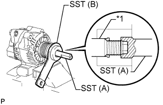
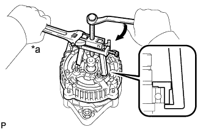

ГЕНЕРАТОР (типа 80 A) > РАЗБОРКА |
| 1. СНИМИТЕ КРЫШКУ ШКИВА ГЕНЕРАТОРА |
С помощью отвертки снимите крышку шкива генератора.
| 2. СНИМИТЕ ШКИВ ГЕНЕРАТОРА С МУФТОЙ |
Закрепите генератор в тисках между алюминиевыми пластинами.
|  |
Установите на шкив генератора с муфтой SST (A) и SST (B), как показано на рисунке.
| *1 | Вал ротора |
Удерживая SST (A) гаечным ключом, поверните SST (B) против часовой стрелки, чтобы ослабить шкив генератора с муфтой.
| *a | Удерживайте |
 | Поверните |
Снимите SST с генератора.
Снимите шкив генератора с муфтой с вала ротора.
| 3. СНИМИТЕ ЩЕТКОДЕРЖАТЕЛЬ ГЕНЕРАТОРА В СБОРЕ |
Отверните гайку, выверните винт и снимите пластину диодного моста.
Отверните 2 гайки и снять заднюю крышку.
Отверните гайку крепления и снять изолятор клеммы.
Снимите крышку щеткодержателя со щеткодержателя генератора.
Выверните 3 винта и снимите щеткодержатель генератора.
Снимите прокладку.
| 4. СНИМИТЕ РЕГУЛЯТОР ГЕНЕРАТОРА В СБОРЕ |
Выверните 2 винта и снимите регулятор генератора.
| 5. СНИМИТЕ ДЕРЖАТЕЛЬ ГЕНЕРАТОРА С ДИОДНЫМ МОСТОМ |
Выверните 3 винта и снимите держатель генератора с диодным мостом.
| 6. СНИМИТЕ РОТОР ГЕНЕРАТОРА В СБОРЕ |
Вытащите 3 изолятора контактов из крышки со стороны выпрямителя.
Отверните 4 гайки.
|  |
С помощью SST снимите крышку диодного моста.
| *a | Удерживайте |
| Поверните |
Снимите шайбу.
Снимите ротор генератора с рамы со стороны привода.